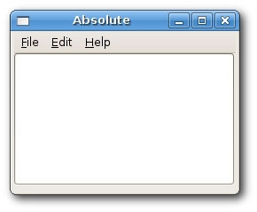
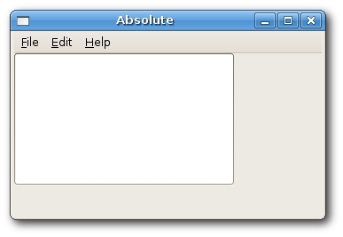
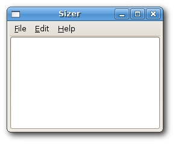
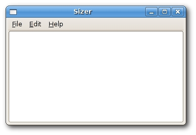
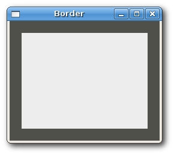
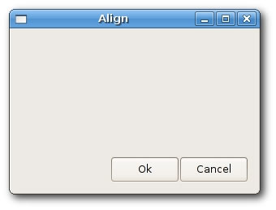
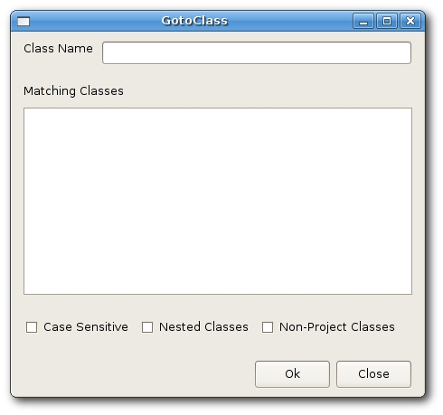
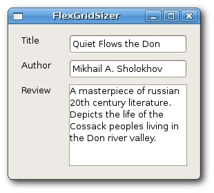

Layout management in wxWidgets
A typical application consists of various widgets. Those widgets are placed inside container widgets. A programmer must manage the layout of the application. This is not an easy task. In wxWidgets we have two options.
- absolute positioning
- sizers
Absolute Positioning
The programmer specifies the position and the size of each widget in pixels. When you use absolute positioning, you have to understand several things.
- the size and the position of a widget do not change, if you resize a window
- applications look different (crappy) on various platforms
- changing fonts in your application might spoil the layout
- if you decide to change your layout, you must completely redo your layout, which is tedious and time consuming
There might be situations, where we can possibly use absolute positioning. For example, my tutorials. I do not want to make the examples too difficult, so I often use absolute positioning to explain a topic. But mostly, in real world programs, programmers use sizers.
In our example we have a simple skeleton of a text editor. If we resize the window, the size of out wxTextCtrl does not change as we would expect.


absolute.h#include <wx/wx.h> class Absolute : public wxFrame { public: Absolute(const wxString& title); wxMenuBar *menubar; wxMenu *file; wxMenu *edit; wxMenu *help; wxTextCtrl *textctrl; };
absolute.cpp#include "absolute.h" Absolute::Absolute(const wxString& title) : wxFrame(NULL, -1, title, wxPoint(-1, -1), wxSize(250, 180)) { wxPanel *panel = new wxPanel(this, -1); menubar = new wxMenuBar; file = new wxMenu; edit = new wxMenu; help = new wxMenu; menubar->Append(file, wxT("&File")); menubar->Append(edit, wxT("&Edit")); menubar->Append(help, wxT("&Help")); SetMenuBar(menubar); textctrl = new wxTextCtrl(panel, -1, wxT(""), wxPoint(-1, -1), wxSize(250, 150)); Centre(); }
main.h#include <wx/wx.h> class MyApp : public wxApp { public: virtual bool OnInit(); };
main.cpp#include "main.h" #include "absolute.h" IMPLEMENT_APP(MyApp) bool MyApp::OnInit() { Absolute *absolute = new Absolute(wxT("Absolute")); absolute->Show(true); return true; }
This is an example, where we use absolute positioning. We position a wxTextCtrl widget on a panel widget.
textctrl = new wxTextCtrl(panel, -1, wxT(""), wxPoint(-1, -1),
wxSize(250, 150));
We do the absolute positioning in the constructor of the wxTextCtrl widget. In our case, we provide the default position for the widget. The width is 250px and the height 150px.
Using sizers
Sizers in wxWidgets do address all those issues, we mentioned by absolute positioning. We can choose among these sizers.
- wxBoxSizer
- wxStaticBoxSizer
- wxGridSizer
- wxFlexGridSizer
- wxGridBagSizer


sizer.h#include <wx/wx.h> class Sizer : public wxFrame { public: Sizer(const wxString& title); wxMenuBar *menubar; wxMenu *file; wxMenu *edit; wxMenu *help; wxTextCtrl *textctrl; };
sizer.cpp#include "sizer.h" Sizer::Sizer(const wxString& title) : wxFrame(NULL, -1, title, wxPoint(-1, -1), wxSize(250, 180)) { menubar = new wxMenuBar; file = new wxMenu; edit = new wxMenu; help = new wxMenu; menubar->Append(file, wxT("&File")); menubar->Append(edit, wxT("&Edit")); menubar->Append(help, wxT("&Help")); SetMenuBar(menubar); textctrl = new wxTextCtrl(this, -1, wxT(""), wxPoint(-1, -1), wxSize(250, 150)); Centre(); }
main.h#include <wx/wx.h> class MyApp : public wxApp { public: virtual bool OnInit(); };
main.cpp#include "main.h" #include "sizer.h" IMPLEMENT_APP(MyApp) bool MyApp::OnInit() { Sizer *sizer = new Sizer(wxT("Sizer")); sizer->Show(true); return true; }
Ok, so you are saying that you don't see any sizers in the example? Well, the code example was a bit tricky. Actually, we placed the wxTextCtrl inside the wxFrame widget. The wxFrame widget has a special built-in sizer. We can put only one widget inside the wxFrame container. The child widget occupies all the space, which is not given to the borders, menu, toolbar and the statusbar.
wxBoxSizer
This sizer enables us to put several widgets into a row or a column. We can put another sizer into an existing sizer. This way we can create very complex layouts.wxBoxSizer(int orient) wxSizerItem* Add(wxWindow* window, int proportion = 0, int flag = 0, int border = 0)
The orientation can be wxVERTICAL or wxHORIZONTAL. Adding widgets into the wxBoxSizer is done via the Add() method. In order to understand it, we need to look at its parameters.
The proportion parameter defines the ratio of how will the widgets change in the defined orientation. Let's assume we have tree buttons with the proportions 0, 1, and 2. They are added into a horizontal wxBoxSizer. Button with proportion 0 will not change at all. Button with proportion 2 will change twice more than the one with proportion 1 in the horizontal dimension.
With the flag parameter you can further configure the behaviour of the widgets within a wxBoxSizer. We can control the border between the widgets. We add some space between widgets in pixels. In order to apply border we need to define sides, where the border will be used. We can combine them with the | operator. e.g wxLEFT | wxBOTTOM. We can choose between these flags:
- wxLEFT
- wxRIGHT
- wxBOTTOM
- wxTOP
- wxALL

border.h#include <wx/wx.h> class Border : public wxFrame { public: Border(const wxString& title); };
border.cpp#include "border.h" Border::Border(const wxString& title) : wxFrame(NULL, wxID_ANY, title, wxDefaultPosition, wxSize(250, 200)) { wxColour col1, col2; col1.Set(wxT("#4f5049")); col2.Set(wxT("#ededed")); wxPanel *panel = new wxPanel(this, -1); panel->SetBackgroundColour(col1); wxBoxSizer *vbox = new wxBoxSizer(wxVERTICAL); wxPanel *midPan = new wxPanel(panel, wxID_ANY); midPan->SetBackgroundColour(col2); vbox->Add(midPan, 1, wxEXPAND | wxALL, 20); panel->SetSizer(vbox); Centre(); }
main.h#include <wx/wx.h> class MyApp : public wxApp { public: virtual bool OnInit(); };
main.cpp#include "main.h" #include "border.h" IMPLEMENT_APP(MyApp) bool MyApp::OnInit() { Border *border = new Border(wxT("Border")); border->Show(true); return true; }
In this example, we create two panels. The second panel has some space around itself.
vbox->Add(midPan, 1, wxEXPAND | wxALL, 20);
We have placed a 20 px border around a midPan panel. wxALL applies the border size to all four sides. If we use wxEXPAND flag, the widget will use all the space that has been allotted to it.
Lastly, we can also define the alignment of our widgets. We do it with the following flags :
- wxALIGN_LEFT
- wxALIGN_RIGHT
- wxALIGN_TOP
- wxALIGN_BOTTOM
- wxALIGN_CENTER_VERTICAL
- wxALIGN_CENTER_HORIZONTAL
- wxALIGN_CENTER
Say we wanted to place two buttons into the right bottom of the window.
align.h#include <wx/wx.h> class Align : public wxFrame { public: Align(const wxString& title); };
align.cpp#include "align.h" Align::Align(const wxString& title) : wxFrame(NULL, -1, title, wxPoint(-1, -1), wxSize(300, 200)) { wxPanel *panel = new wxPanel(this, -1); wxBoxSizer *vbox = new wxBoxSizer(wxVERTICAL); wxBoxSizer *hbox1 = new wxBoxSizer(wxHORIZONTAL); wxBoxSizer *hbox2 = new wxBoxSizer(wxHORIZONTAL); wxButton *ok = new wxButton(panel, -1, wxT("Ok")); wxButton *cancel = new wxButton(panel, -1, wxT("Cancel")); hbox1->Add(new wxPanel(panel, -1)); vbox->Add(hbox1, 1, wxEXPAND); hbox2->Add(ok); hbox2->Add(cancel); vbox->Add(hbox2, 0, wxALIGN_RIGHT | wxRIGHT | wxBOTTOM, 10); panel->SetSizer(vbox); Centre(); }
main.h#include <wx/wx.h> class MyApp : public wxApp { public: virtual bool OnInit(); };
main.cpp#include "main.h" #include "align.h" IMPLEMENT_APP(MyApp) bool MyApp::OnInit() { Align *align = new Align(wxT("Align")); align->Show(true); return true; }
We create three sizers. One vertical sizer and two horizontal sizers. We put those two horizontal sizers into the vertical one.
hbox1->Add(new wxPanel(panel, -1)); vbox->Add(hbox1, 1, wxEXPAND);
We put a wxPanel into the first horizontal sizer. We set the proportion to 1 and set a wxEXPAND flag. This way the sizer will occupy all the space except the hbox2.
vbox->Add(hbox2, 0, wxALIGN_RIGHT | wxRIGHT | wxBOTTOM, 10);
We have placed the buttons into the hbox2 sizer. The hbox2 is right aligned and we also put some space to the bottom and to the right of the buttons.

Go To Class
In the following example we introduce several important ideas.
gotoclass.h#include <wx/wx.h> class GotoClass : public wxFrame { public: GotoClass(const wxString& title); };
gotoclass.cpp#include "gotoclass.h" GotoClass::GotoClass(const wxString& title) : wxFrame(NULL, -1, title, wxPoint(-1, -1), wxSize(450, 400)) { wxPanel *panel = new wxPanel(this, -1); wxBoxSizer *vbox = new wxBoxSizer(wxVERTICAL); wxBoxSizer *hbox1 = new wxBoxSizer(wxHORIZONTAL); wxStaticText *st1 = new wxStaticText(panel, wxID_ANY, wxT("Class Name")); hbox1->Add(st1, 0, wxRIGHT, 8); wxTextCtrl *tc = new wxTextCtrl(panel, wxID_ANY); hbox1->Add(tc, 1); vbox->Add(hbox1, 0, wxEXPAND | wxLEFT | wxRIGHT | wxTOP, 10); vbox->Add(-1, 10); wxBoxSizer *hbox2 = new wxBoxSizer(wxHORIZONTAL); wxStaticText *st2 = new wxStaticText(panel, wxID_ANY, wxT("Matching Classes")); hbox2->Add(st2, 0); vbox->Add(hbox2, 0, wxLEFT | wxTOP, 10); vbox->Add(-1, 10); wxBoxSizer *hbox3 = new wxBoxSizer(wxHORIZONTAL); wxTextCtrl *tc2 = new wxTextCtrl(panel, wxID_ANY, wxT(""), wxPoint(-1, -1), wxSize(-1, -1), wxTE_MULTILINE); hbox3->Add(tc2, 1, wxEXPAND); vbox->Add(hbox3, 1, wxLEFT | wxRIGHT | wxEXPAND, 10); vbox->Add(-1, 25); wxBoxSizer *hbox4 = new wxBoxSizer(wxHORIZONTAL); wxCheckBox *cb1 = new wxCheckBox(panel, wxID_ANY, wxT("Case Sensitive")); hbox4->Add(cb1); wxCheckBox *cb2 = new wxCheckBox(panel, wxID_ANY, wxT("Nested Classes")); hbox4->Add(cb2, 0, wxLEFT, 10); wxCheckBox *cb3 = new wxCheckBox(panel, wxID_ANY, wxT("Non-Project Classes")); hbox4->Add(cb3, 0, wxLEFT, 10); vbox->Add(hbox4, 0, wxLEFT, 10); vbox->Add(-1, 25); wxBoxSizer *hbox5 = new wxBoxSizer(wxHORIZONTAL); wxButton *btn1 = new wxButton(panel, wxID_ANY, wxT("Ok")); hbox5->Add(btn1, 0); wxButton *btn2 = new wxButton(panel, wxID_ANY, wxT("Close")); hbox5->Add(btn2, 0, wxLEFT | wxBOTTOM , 5); vbox->Add(hbox5, 0, wxALIGN_RIGHT | wxRIGHT, 10); panel->SetSizer(vbox); Centre(); }
main.h#include <wx/wx.h> class MyApp : public wxApp { public: virtual bool OnInit(); };
main.cpp#include "main.h" #include "gotoclass.h" IMPLEMENT_APP(MyApp) bool MyApp::OnInit() { GotoClass *gotoclass = new GotoClass(wxT("GotoClass")); gotoclass->Show(true); return true; }
This is a complex example using wxBoxSizer. The layout is straitforward. We create one vertical sizer. We put then five horizontal sizers into it.
vbox->Add(hbox3, 1, wxLEFT | wxRIGHT | wxEXPAND, 10); vbox->Add(-1, 25);
We already know that we can control the distance among widgets by combining the flag parameter with the border parameter. But there is one real constraint. In the Add() method we can specify only one border for all given sides. In our example, we give 10px to the right and to the left. But we cannot give 25 px to the bottom. What we can do is to give 10px to the bottom, or 0px. If we omit wxBOTTOM. So if we need different values, we can add some extra space. With the Add() method, we can insert widgets and space as well.
vbox->Add(hbox5, 0, wxALIGN_RIGHT | wxRIGHT, 10);
We place the two buttons on the right side of the window. How do we do it? Three things are important to achieve this. The proportion, the align flag and the wxEXPAND flag. The proportion must be zero. The buttons should not change their size, when we resize our window. We must not specify wxEXPAND flag. The buttons occopy only the area that has been alotted to it. And finally, we must specify the wxALIGN_RIGHT flag. The horizontal sizer spreads from the left side of the window to the right side. So if we specify wxALIGN_RIGHT flag, the buttons are placed to the right side. Exactly, as we wanted.

wxGridSizer
wxGridSizer lays out widgets in two dimensional table. Each cell within the table has the same size.
wxGridSizer(int rows, int cols, int vgap, int hgap)
In the constructor we specify the number of rows and columns in the table. And the vertical and horizontal space between our cells.
In our example we create a skeleton of a calculator. It is a perfect example for a wxGridSizer.
gridsizer.h#include <wx/wx.h> class GridSizer : public wxFrame { public: GridSizer(const wxString& title); wxMenuBar *menubar; wxMenu *file; wxBoxSizer *sizer; wxGridSizer *gs; wxTextCtrl *display; };
gridsizer.cpp#include "gridsizer.h" GridSizer::GridSizer(const wxString& title) : wxFrame(NULL, -1, title, wxPoint(-1, -1), wxSize(270, 220)) { menubar = new wxMenuBar; file = new wxMenu; SetMenuBar(menubar); sizer = new wxBoxSizer(wxVERTICAL); display = new wxTextCtrl(this, -1, wxT(""), wxPoint(-1, -1), wxSize(-1, -1), wxTE_RIGHT); sizer->Add(display, 0, wxEXPAND | wxTOP | wxBOTTOM, 4); gs = new wxGridSizer(4, 4, 3, 3); gs->Add(new wxButton(this, -1, wxT("Cls")), 0, wxEXPAND); gs->Add(new wxButton(this, -1, wxT("Bck")), 0, wxEXPAND); gs->Add(new wxStaticText(this, -1, wxT("")), 0, wxEXPAND); gs->Add(new wxButton(this, -1, wxT("Close")), 0, wxEXPAND); gs->Add(new wxButton(this, -1, wxT("7")), 0, wxEXPAND); gs->Add(new wxButton(this, -1, wxT("8")), 0, wxEXPAND); gs->Add(new wxButton(this, -1, wxT("9")), 0, wxEXPAND); gs->Add(new wxButton(this, -1, wxT("/")), 0, wxEXPAND); gs->Add(new wxButton(this, -1, wxT("4")), 0, wxEXPAND); gs->Add(new wxButton(this, -1, wxT("5")), 0, wxEXPAND); gs->Add(new wxButton(this, -1, wxT("6")), 0, wxEXPAND); gs->Add(new wxButton(this, -1, wxT("*")), 0, wxEXPAND); gs->Add(new wxButton(this, -1, wxT("1")), 0, wxEXPAND); gs->Add(new wxButton(this, -1, wxT("2")), 0, wxEXPAND); gs->Add(new wxButton(this, -1, wxT("3")), 0, wxEXPAND); gs->Add(new wxButton(this, -1, wxT("-")), 0, wxEXPAND); gs->Add(new wxButton(this, -1, wxT("0")), 0, wxEXPAND); gs->Add(new wxButton(this, -1, wxT(".")), 0, wxEXPAND); gs->Add(new wxButton(this, -1, wxT("=")), 0, wxEXPAND); gs->Add(new wxButton(this, -1, wxT("+")), 0, wxEXPAND); sizer->Add(gs, 1, wxEXPAND); SetSizer(sizer); SetMinSize(wxSize(270, 220)); Centre(); }
main.h#include <wx/wx.h> class MyApp : public wxApp { public: virtual bool OnInit(); };
main.cpp#include "main.h" #include "gridsizer.h" IMPLEMENT_APP(MyApp) bool MyApp::OnInit() { GridSizer *gs = new GridSizer(wxT("GridSizer")); gs->Show(true); return true; }
In our example, we set a vertical sizer for a wxFrame. We put a static text and a grid sizer into the vertical sizer.
Notice how we managed to put a space between the Bck and the Close buttons. We simply put an empty wxStaticText there. Such tricks are quite common.
gs->Add(new wxButton(this, -1, wxT("Cls")), 0, wxEXPAND);
We call the Add() method multiple times. Widgets are placed inside the table in the order, they are added. The first row is filled first, then the second row etc.

wxFlexGridSizer
This sizer is similar to wxGridSizer. It does also lay out it's widgets in a two dimensional table. It adds some flexibility to it. wxGridSizer cells are of the same size. All cells in wxFlexGridSizer have the same height in a row. All cells have the same width in a column. But all rows and columns are not necessarily the same height or width.
wxFlexGridSizer(int rows, int cols, int vgap, int hgap)
rows and cols specify the number of rows and columns in a sizer. vgap and hgap add some space between widgets in both directions.
Many times developers have to develop dialogs for data input and modification. I find wxFlexGridSizer suitable for such a task. A developer can easily set up a dialog window with this sizer. It is also possible to accomplish this with wxGridSizer, but it would not look nice, because of the constraint that each cell has the same size.
flexgridsizer.h#include <wx/wx.h> class FlexGridSizer : public wxFrame { public: FlexGridSizer(const wxString& title); };
flexgridsizer.cpp#include "flexgridsizer.h" FlexGridSizer::FlexGridSizer(const wxString& title) : wxFrame(NULL, -1, title, wxPoint(-1, -1), wxSize(270, 220)) { wxPanel *panel = new wxPanel(this, -1); wxBoxSizer *hbox = new wxBoxSizer(wxHORIZONTAL); wxFlexGridSizer *fgs = new wxFlexGridSizer(3, 2, 9, 25); wxStaticText *thetitle = new wxStaticText(panel, -1, wxT("Title")); wxStaticText *author = new wxStaticText(panel, -1, wxT("Author")); wxStaticText *review = new wxStaticText(panel, -1, wxT("Review")); wxTextCtrl *tc1 = new wxTextCtrl(panel, -1); wxTextCtrl *tc2 = new wxTextCtrl(panel, -1); wxTextCtrl *tc3 = new wxTextCtrl(panel, -1, wxT(""), wxPoint(-1, -1), wxSize(-1, -1), wxTE_MULTILINE); fgs->Add(thetitle); fgs->Add(tc1, 1, wxEXPAND); fgs->Add(author); fgs->Add(tc2, 1, wxEXPAND); fgs->Add(review, 1, wxEXPAND); fgs->Add(tc3, 1, wxEXPAND); fgs->AddGrowableRow(2, 1); fgs->AddGrowableCol(1, 1); hbox->Add(fgs, 1, wxALL | wxEXPAND, 15); panel->SetSizer(hbox); Centre(); }
main.h#include <wx/wx.h> class MyApp : public wxApp { public: virtual bool OnInit(); };
main.cpp#include "main.h" #include "flexgridsizer.h" IMPLEMENT_APP(MyApp) bool MyApp::OnInit() { FlexGridSizer *fgs = new FlexGridSizer(wxT("FlexGridSizer")); fgs->Show(true); return true; }
In our example we create a simple dialog. It could be used to insert data into the database.
wxBoxSizer *hbox = new wxBoxSizer(wxHORIZONTAL); ... hbox->Add(fgs, 1, wxALL | wxEXPAND, 15);
We create a horizontal box sizer in order to put some space (15px) around the table of widgets.
fgs->Add(thetitle);
We add widgets to the sizer exactly as with the gridsizer.
fgs->AddGrowableRow(2, 1); fgs->AddGrowableCol(1, 1);
We make the third row and the second column growable. This way we make the text controls grow, when the window is resized. The first two text controls will grow in horizontal direction, the third one will grow in both direction. We must not forget to make the widgets expandable (wxEXPAND) in order to make it really work.
